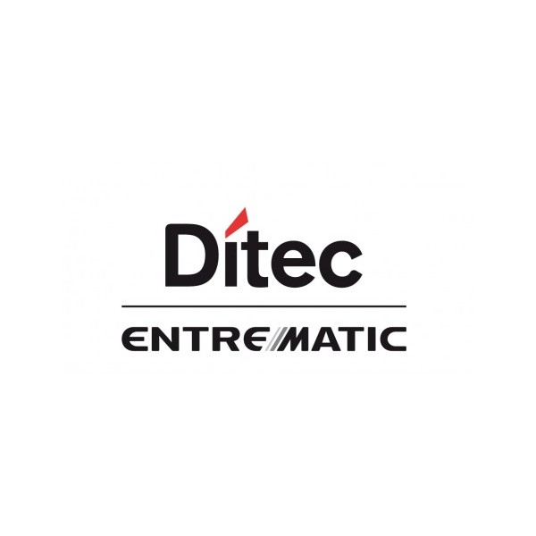

Ditec

ООО «ДИТЕК МАШИНОСТРОЕНИЕ» в Тольятти — производитель промышленного оборудования для производства дверей и мебели на территории РФ. Компания выпускает станки и комплектующие, которые проходят тщательную проверку на качество. Вся продукция сертифицирована по международным стандартам и отчасти не имеет аналогов. Изготовление станков и их компонентов выполняется на современных системах ЧПУ.